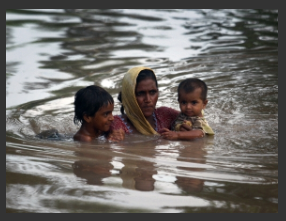

Informacion tomada de Nacion.com
Bin Laden llama a musulmanes a ayudar a damnificados en Pakistán
|
Dubái. AFP Osama bin Laden exhortó a los |
 |
"El múmero de victimas provocado por los cambios climáticos es muy grande (...), más importante
que las victimas de las guerras", afirma la voz atribuida al dirigente de al-Qaeda,y cuya autenticidad
no pudo ser verificada. Se trata de la primera grabación atrībuida a Bin Laden desde el 25 de marzo.
Contrariamente a sus anteriores mensajes, éste no tiene contenido politico.
La fecha de esta grabación se desconoce, pero el jefe de al-Qaeda felicita a los musulmanes con motivo
del fin del mes de Ramadán, que acabó el 10 de septiembre. "La catástrofe (en Pakistán) es muy grande
y es dificil describirla. Lo que afrontamos (…) exige una acción rápida y seria de las almas caritativas
y de los hombres valientes, para aportar ayuda a sus hermanos musulmanes de Pakistán", dice. Según
la ONU, 21 millones de personas fueron damnificadas por las iundaciones que sufrió Pakistán, y de ellos
12 millones necesitan urgentemente ayuda.
En la grabación, de 11 minutos y 39 segundos, titulada Reflexiones sobre las operaciones de socorro, Bin
Laden propone la creación de un organismo de socorro islámico internacional "Proveer tiendas de campaña,
alimentos y medicamentos es una obligación (…) pero los desastres (que sufren numerosos paises musulmanes)
son mucho más importantes que la ayuda propuesta y la acción no debe limitarse a las ayudas de urgencia sino
que hay que organizar un grupo especial que tenga los conocimientos y la experiencia necesarios para enfrentar
esos desafios", dice.
Bien Laden exhorta en la grabación a revisar las directivas de seguridad de las represas y de los puentes y a
invertir en agricultura. "Invertir en agricultura requiere muchos esfuerzos y produce ganancias poco importantes.
Hoy no se trata de una cuestión de ganancias o de pérdidas, sino de una cuestión de vida o muerte", recalca.
En otra grabación difundida en enero, Bin Laden acusó a las naciones industrializadas de ser la causa del cambio
climático. En la difundida el 25 de marzo, amenazó con matar a todos los norteamericanos capturados por su red
si Jaled Cheij Mohamed, el organizador de los atentados del 11 de setiembre, y sus compañeros son ejecutados.
La mayoria de los expertos en asuntos de al-Qaeda consideran que Osama bin Laden se esconde probablemente
en una región montañosa entre Pakistán y Afganistán.